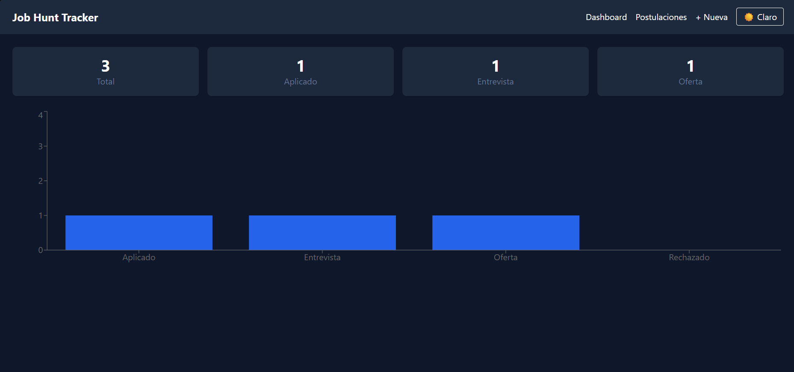

Projects




📍 Buenos Aires, Argentina · Open to remote
Focused on building modern web applications using JavaScript, Java and frontend technologies.
Systems Analyst graduate passionate about software development, APIs, and modern web technologies. I design, build and deploy full projects end to end — including a freelance website for a real client — and integrate AI tools (GitHub Copilot, ChatGPT, Claude) into my workflow to write, refactor and debug code faster.

Buenos Aires, Argentina · Open to relocation / 100% remote
+39 379 167 4585